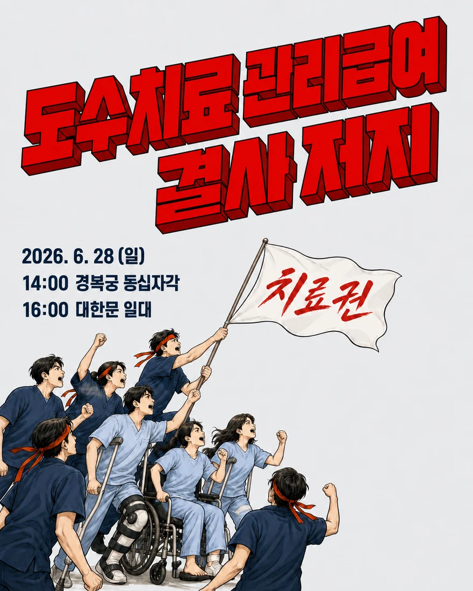
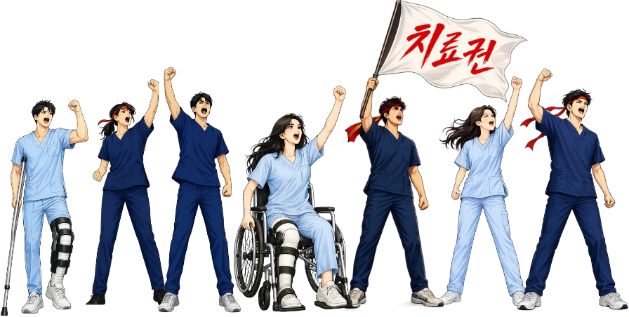

<!DOCTYPE html><html lang="ko"><head><meta charset="utf-8">
<meta name="viewport" content="width=device-width,initial-scale=1">
<title>도수치료 관련 뉴스·청원 상황판</title>
<meta property="og:type" content="website">
<meta property="og:url" content="https://ptnews.vercel.app">
<meta property="og:title" content="도수치료 관련 뉴스·청원 상황판">
<meta property="og:description" content="보도·공지·청원을 한눈에. 6.28 총궐기, 함께 행동해 주세요.">
<meta property="og:image" content="https://ptnews.vercel.app/img/og.png?v=1">
<meta property="og:image:width" content="1200">
<meta property="og:image:height" content="630">
<meta name="twitter:card" content="summary_large_image">
<meta name="twitter:title" content="도수치료 관련 뉴스·청원 상황판">
<meta name="twitter:description" content="보도·공지·청원을 한눈에. 6.28 총궐기, 함께 행동해 주세요.">
<meta name="twitter:image" content="https://ptnews.vercel.app/img/og.png?v=1">
<link rel="preconnect" href="https://fastly.jsdelivr.net" crossorigin>
<link rel="stylesheet" href="https://fastly.jsdelivr.net/gh/orioncactus/pretendard@v1.3.9/dist/web/variable/pretendardvariable-dynamic-subset.min.css">
<style>*{box-sizing:border-box}html,body{margin:0}
body{font-family:'Pretendard',-apple-system,BlinkMacSystemFont,'Apple SD Gothic Neo','Malgun Gothic',sans-serif;background:#0E121B;color:#E9EBF1;-webkit-font-smoothing:antialiased}
@keyframes pulseDot{0%,100%{opacity:1;transform:scale(1)}50%{opacity:.35;transform:scale(.7)}}
@keyframes mq{from{transform:translateX(0)}to{transform:translateX(-50%)}}
.mqwrap{flex:1;min-width:0;overflow:hidden}
.mq{display:inline-flex;white-space:nowrap;will-change:transform;animation-name:mq;animation-timing-function:linear;animation-iteration-count:infinite}
.mqwrap:hover .mq{animation-play-state:paused}
.sb::-webkit-scrollbar{width:0;height:0;display:none}.sb{scrollbar-width:none;-ms-overflow-style:none}
.hsb::-webkit-scrollbar{width:0;height:0;display:none}.hsb{scrollbar-width:none;-ms-overflow-style:none}
.fanrow::-webkit-scrollbar{width:0;height:0;display:none}.fanrow{scrollbar-width:none;-ms-overflow-style:none}
.wheelx::-webkit-scrollbar{width:0;height:0;display:none}.wheelx{scrollbar-width:none;-ms-overflow-style:none}
.clamp2{display:-webkit-box;-webkit-line-clamp:2;-webkit-box-orient:vertical;overflow:hidden}
a{color:inherit;text-decoration:none}
button{font-family:inherit;cursor:pointer}
.card:hover{border-color:rgba(255,255,255,.24)!important}
.gcard{position:relative;background:#1E2840;border:1px solid rgba(255,255,255,.13);transition:transform .18s ease,box-shadow .18s ease}
.gcard:hover{transform:scale(1.04);z-index:5;overflow:visible!important;box-shadow:0 14px 34px -12px rgba(0,0,0,.6);border-color:rgba(255,255,255,.32)!important}
.gcard:hover .clamp2{-webkit-line-clamp:99;overflow:visible}
.fanrow .gcard:hover{overflow:hidden!important}
.fanrow .gcard:hover .clamp2{-webkit-line-clamp:2;overflow:hidden}
.stmtpull{transition:transform .26s cubic-bezier(.22,.61,.36,1),box-shadow .26s ease,filter .2s ease}
.stmtpull:hover{transform:translateY(-62px);z-index:30;box-shadow:0 26px 52px -10px rgba(0,0,0,.85);filter:brightness(1.05)}
.stmtsec{overflow:hidden}
.stmtsec:has(.stmtpull:hover){overflow:visible;z-index:6}
[data-tip]{position:relative}
.stmtsec:has([data-tip]:hover){overflow:visible;z-index:7}
.stmtlb{transition:transform .18s ease,box-shadow .18s ease}
.stmtlb:hover{transform:translateY(-5px);box-shadow:0 14px 26px -8px rgba(0,0,0,.6);filter:brightness(1.05)}
.pet:hover{background:#202940!important;border-color:rgba(255,255,255,.16)!important}
.btnh{-webkit-backdrop-filter:blur(5px) saturate(1.5) url(#lglass);backdrop-filter:blur(5px) saturate(1.5) url(#lglass);background:linear-gradient(180deg,rgba(255,255,255,.2),rgba(255,255,255,.06))!important;border-color:rgba(255,255,255,.3)!important;box-shadow:inset 0 1px 0 rgba(255,255,255,.55),inset 0 -2px 5px rgba(140,175,230,.16)}
.btnh:active{transform:translateY(1px);box-shadow:inset 0 1px 0 rgba(255,255,255,.4),0 1px 2px rgba(0,0,0,.3)!important}
.btnh:hover{background:linear-gradient(180deg,rgba(255,255,255,.34),rgba(255,255,255,.12))!important;border-color:rgba(255,255,255,.42)!important}
.btnh.nv{background:linear-gradient(180deg,rgba(56,84,148,.62),rgba(30,46,84,.42))!important;border-color:rgba(120,152,216,.5)!important}
.btnh.nv:hover{background:linear-gradient(180deg,rgba(74,108,176,.78),rgba(40,60,108,.52))!important;border-color:rgba(150,180,235,.62)!important}
.btnh.gn{background:linear-gradient(180deg,rgba(62,158,120,.62),rgba(38,104,78,.42))!important;border-color:rgba(110,205,162,.55)!important;color:#EAFBF3!important}
.btnh.gn:hover{background:linear-gradient(180deg,rgba(80,188,142,.78),rgba(48,128,96,.52))!important;border-color:rgba(140,225,185,.65)!important}
.ghdr{position:relative;height:43px;-webkit-backdrop-filter:blur(8px) saturate(1.5) url(#lglass);backdrop-filter:blur(8px) saturate(1.5) url(#lglass);box-shadow:inset 0 1px 0 rgba(255,255,255,.6),inset 0 -1px 2px rgba(150,185,225,.22)}
.hsb:not(.wheelx){-webkit-backdrop-filter:blur(7px) saturate(1.5) url(#lglass);backdrop-filter:blur(7px) saturate(1.5) url(#lglass);box-shadow:inset 0 1px 0 rgba(255,255,255,.22)}
@keyframes twinkle{0%,100%{transform:scale(0) rotate(0deg);opacity:0}45%{transform:scale(1.2) rotate(90deg);opacity:1}72%{transform:scale(0) rotate(150deg);opacity:0}}
.glow{position:relative;display:inline-block;color:#fff}
.spk{position:absolute;background:#fff;clip-path:polygon(50% 0,58% 42%,100% 50%,58% 58%,50% 100%,42% 58%,0 50%,42% 42%);filter:drop-shadow(0 0 5px rgba(255,255,255,.95));pointer-events:none;opacity:0;z-index:6;animation:twinkle 1.8s ease-in-out infinite}
.spk.a{width:15px;height:15px;top:-8px;left:-11px}
.spk.b{width:10px;height:10px;top:-6px;right:-13px;animation-delay:.45s}
.spk.c{width:13px;height:13px;bottom:-8px;left:34%;animation-delay:.95s}
.spk.d{width:8px;height:8px;bottom:-6px;right:-7px;animation-delay:1.35s}
.spk.e{width:12px;height:12px;top:-5px;left:48%;animation-delay:.7s}
.spk.f{width:8px;height:8px;top:40%;left:-15px;animation-delay:1.55s}
.thumb img{width:100%;height:100%;object-fit:cover;display:block}
.popb{transition:transform .12s ease,filter .12s ease}.popb:hover{filter:brightness(1.08);transform:translateY(-1px)}.popb:active{transform:translateY(1px)}
.ktalk{position:relative;overflow:hidden}
.ktalk::after{content:'';position:absolute;top:0;left:-65%;width:30%;height:100%;background:linear-gradient(105deg,transparent 0%,rgba(255,255,255,.7) 50%,transparent 100%);transform:skewX(-18deg);pointer-events:none;animation:ktshine 3.4s ease-in-out infinite}
@keyframes ktshine{0%{left:-65%}50%{left:130%}100%{left:130%}}
.fanrow>.fancard{transition:transform .3s cubic-bezier(.22,.61,.36,1),opacity .3s ease,box-shadow .3s ease;transform-origin:center center;will-change:transform;box-shadow:0 12px 30px -12px rgba(0,0,0,.75)}
.fanrow>.fancard:hover{filter:brightness(1.06)}
.carnav:active{transform:translateY(-50%) scale(.92)!important}
.stk{position:absolute;inset:0;border-radius:16px;border:1px solid rgba(255,255,255,.1);box-shadow:0 8px 20px -10px rgba(0,0,0,.6);transition:transform .28s cubic-bezier(.22,.61,.36,1);will-change:transform}
.stk1{background:#18213a;transform:translate(11px,-10px);z-index:1}
.stk2{background:#141d30;transform:translate(22px,-20px);z-index:0}
.stk3{background:#11172a;transform:translate(33px,-30px);z-index:0}
.fancard:hover .stk1{transform:translate(16px,-15px)}
.fancard:hover .stk2{transform:translate(32px,-30px)}
.fancard:hover .stk3{transform:translate(48px,-45px)}
</style></head>
<body>
<div id="app"></div>
<svg width="0" height="0" style="position:absolute;pointer-events:none" aria-hidden="true"><filter id="lglass" x="-20%" y="-20%" width="140%" height="140%" color-interpolation-filters="sRGB"><feTurbulence type="fractalNoise" baseFrequency="0.006 0.010" numOctaves="1" seed="11" result="noise"></feTurbulence><feGaussianBlur in="noise" stdDeviation="1.2" result="sn"></feGaussianBlur><feDisplacementMap in="SourceGraphic" in2="sn" scale="16" xChannelSelector="R" yChannelSelector="G"></feDisplacementMap></filter></svg>
<script>
const DATA={"ko":[{"date":"2026-06-22","disp":"6.22","title":"물리치료사는 권고사직 중인데…협회는 '비대위 구성'마저 부결시켰다","url":"https://www.seoulilbo.co.kr/news/articleView.html?idxno=20927","img":"img/ko_cokr20927.png"},{"date":"2026-06-21","disp":"6.21","title":"\"직원 90.9% 줄인다\"…도수치료 D-10, 물리치료사들 벌써 실직 시작됐다","url":"https://www.seoulilbo.co.kr/news/articleView.html?idxno=20907","img":"img/ko_cokr20907.jpg"},{"date":"2026-06-18","disp":"6.18","title":"\"근골격계 틀에 갇힌 도수치료\"…림프부종·중증장애아동 환자, 관리급여서 통째로 빠졌다","url":"https://www.seoulilbo.com/news/articleView.html?idxno=833987","img":"img/ko_833987.jpg"},{"date":"2026-06-18","disp":"6.18","title":"실손 손해율 잡으려 국민건강보험 동원…정작 가격 정하고 수익 가져가는 의사·의료기관엔 책임 없어","url":"https://www.seoulilbo.com/news/articleView.html?idxno=833378","img":"img/ko_833378.jpg"},{"date":"2026-06-16","disp":"6.16","title":"도수치료 관리급여 시행 한 달도 안 남아…물리치료사 권고사직·치료실 폐쇄 도미노 현실로","url":"https://www.seoulilbo.com/news/articleView.html?idxno=833321","img":"img/ko_833321.jpg"},{"date":"2026-06-16","disp":"6.16","title":"도수치료 산재 6만8000원·건강보험 4만3850원…국가가 만든 수가 역설에 협회는","url":"https://www.seoulilbo.com/news/articleView.html?idxno=832947","img":"img/ko_832947.jpg"},{"date":"2026-06-16","disp":"6.16","title":"[단독] 페이백 병원, 한방·요양 넘어 일반병원까지 번졌다","url":"https://www.seoulilbo.co.kr/news/articleView.html?idxno=20870","img":"img/ko_cokr20870.jpg"},{"date":"2026-06-14","disp":"6.14","title":"\"당장 7월이 코앞인데 협회는 2시간 동안 기자회견만\"…물리치료사 회원들 분노 폭발","url":"https://www.seoulilbo.com/news/articleView.html?idxno=832674","img":"img/ko_832674.jpg"},{"date":"2026-06-11","disp":"6.11","title":"\"보험료는 꼬박꼬박, 보험금은 어떻게든 안 준다\"…보험사의 세 가지 거절 공식","url":"https://www.seoulilbo.co.kr/news/articleView.html?idxno=20819","img":"img/ko_cokr20819.jpg"},{"date":"2026-06-10","disp":"6.10","title":"도수치료 관리급여화, 환자 등골 휘고 보험사 배만 불린다","url":"https://www.seoulilbo.com/news/articleView.html?idxno=831677","img":"img/ko_831677.jpg"},{"date":"2026-06-08","disp":"6.8","title":"\"종합병원 진단도 못 믿겠다\"는 보험사…의료자문 남용·핸드폰 열람 강요","url":"https://www.seoulilbo.co.kr/news/articleView.html?idxno=20760","img":"img/ko_cokr20760.jpg"},{"date":"2026-06-07","disp":"6.7","title":"도수치료 관리급여 확정…\"암 환자는 어쩌라고\" 림프부종·의료계 동반 반발","url":"https://www.seoulilbo.com/news/articleView.html?idxno=830982","img":"img/ko_830982.jpg"},{"date":"2026-06-03","disp":"6.3","title":"도수치료·혼실 폐지·체외충격파…복지부 의료정책","url":"https://www.seoulilbo.com/news/articleView.html?idxno=830294","img":"img/ko_830294.jpg"},{"date":"2026-05-25","disp":"5.25","title":"도수치료 7월 강행 굳히자…체외충격파까지","url":"https://www.seoulilbo.com/news/articleView.html?idxno=828091","img":"img/ko_828091.jpg"},{"date":"2026-05-15","disp":"5.15","title":"\"관절가동범위도 제각각인데 9회 추가 기준이 뭐냐\"…도수치료 관리급여","url":"https://www.seoulilbo.com/news/articleView.html?idxno=825991","img":"img/ko_com825991.jpg"}],"press":[{"date":"2026-06-22","disp":"26.06.22","chip":"데일리팜","title":"의협 범대위, 6.28 ‘관리급여 반대’ 궐기대회 예고","url":"https://www.dailypharm.com/user/news/339634?REFERER=NP","img":"img/pr_15.jpg","group":"dup45"},{"date":"2026-06-22","disp":"26.06.22","chip":"소비자가만드는신문","title":"관리급여로 실손 거품 빠질까…손보업계 ‘풍선효과’ 우려","url":"http://www.consumernews.co.kr/news/articleView.html?idxno=757845","img":"img/pr_22.jpg"},{"date":"2026-06-22","disp":"26.06.22","chip":"메디팜스투데이","title":"[정책 인사이트] 탈모약 급여화 논리…‘관리급여’ 통제 확대 우려","url":"https://www.apsk.co.kr/news/articleView.html?idxno=539630","img":"img/pr_41.jpg"},{"date":"2026-06-22","disp":"26.06.22","chip":"뉴스핌","title":"복지부, 도수치료 관리급여 전환 속도…의협·물리치료협회, 투쟁 예고","url":"https://www.newspim.com/news/view/20260622000756","img":"img/pr_a36314df665.jpg"},{"date":"2026-06-22","disp":"26.06.22","chip":"메디게이트뉴스","title":"MEDI:GATE NEWS 이주영 의원 관리급여 전환, 배급 의료·치료 허가제 비판","url":"https://www.medigatenews.com/news/1877940649","img":"img/pr_af70c59f069.jpg"},{"date":"2026-06-22","disp":"26.06.22","chip":"쿠키뉴스","title":"“도수치료 4만3850원·연 15회 획일적 규제”…의료계 거리 나선다","url":"https://www.kukinews.com/article/view/kuk202606220069","img":"img/pr_ac4a2030129.jpg"},{"date":"2026-06-22","disp":"26.06.22","chip":"의협신문","title":"이주영 의원, 관리급여 겨냥","url":"http://www.doctorsnews.co.kr/news/articleView.html?idxno=165070","img":"img/pr_a4e201ace9c.jpg"},{"date":"2026-06-22","disp":"26.06.22","chip":"뉴스1","title":"\"도수치료 4만3850원? 정책 추진 중단해야\" 의료계 반발 확산","url":"https://www.news1.kr/bio/general/6204115","img":"img/pr_a414652f0b6.jpg"},{"date":"2026-06-22","disp":"26.06.22","chip":"dentalnews.or.kr","title":"[치과신문] 관리급여 도수치료, 수가 절반 이하로 ‘뚝’","url":"https://www.dentalnews.or.kr/news/article.html?no=47515","img":"img/pr_a9af1b32c60.jpg"},{"date":"2026-06-22","disp":"26.06.22","chip":"메디컬투데이","title":"체외충격파 치료 자율 가이드라인 7월 시행…부위당 6회·연 최대 12회","url":"https://www.mdtoday.co.kr/news/articleView.html?idxno=601575","img":"img/pr_a4f16287b92.jpg"},{"date":"2026-06-22","disp":"26.06.22","chip":"데일리메디","title":"체외충격파 ‘가이드라인’ 공개…의료계 ‘설왕설래’","url":"https://www.dailymedi.com/news/news_view.php?wr_id=937507","img":"img/pr_a5d03cd47b1.jpg"},{"date":"2026-06-21","disp":"26.06.21","chip":"보건뉴스","title":"“관리급여 강행 멈춰라”…의료계, 국민 치료권 수호 총궐기","url":"http://www.bokuennews.com/news/article.html?no=280095","img":"img/pr_16.jpg"},{"date":"2026-06-21","disp":"26.06.21","chip":"데일리메디","title":"범의료계 “28일 궐기대회…진료권 침해 중단하라”","url":"https://www.dailymedi.com/news/news_view.php?wr_id=937567","img":"img/pr_17.jpg"},{"date":"2026-06-21","disp":"26.06.21","chip":"지디넷코리아","title":"관리급여 전환 도수치료…‘30분 이상’ 실시해야 급여","url":"https://zdnet.co.kr/view/?no=20260621142600","img":"img/pr_20.jpg"},{"date":"2026-06-21","disp":"26.06.21","chip":"울산제일일보","title":"‘도수치료 연 최대 24회’…지역 의료계 “접근성 제한 우려”","url":"http://www.ujeil.com/news/articleView.html?idxno=387582","img":"img/pr_23.jpg"},{"date":"2026-06-20","disp":"26.06.20","chip":"데일리메디","title":"기본 물리치료 2주·4회 이후에야 도수치료 ‘급여 인정’","url":"https://www.dailymedi.com/news/news_view.php?wr_id=937550","img":"img/pr_25.jpg"},{"date":"2026-06-20","disp":"26.06.20","chip":"세계비즈","title":"도수치료·체외충격파 메스 든 정부…보험사 적자 개선 ‘신호탄’","url":"http://www.segyebiz.com/newsView/20260619514910?OutUrl=naver","img":"img/pr_a93e674cc80.jpg"},{"date":"2026-06-19","disp":"26.06.19","chip":"뉴시스","title":"도수치료 Q&A: 부위 다르면 하루 2회? 어디서나 4만원대?","url":"https://www.newsis.com/view/NISX20260619_0003676437","img":"img/pr_18.jpg"},{"date":"2026-06-19","disp":"26.06.19","chip":"매일경제","title":"“30만원 도수치료, 내달부터 4만원대로 통일”","url":"https://www.mk.co.kr/article/12078757","img":"img/pr_19.jpg"},{"date":"2026-06-19","disp":"26.06.19","chip":"의협신문","title":"의료계는 ‘집회 예고’, 정부는 ‘행정 예고’","url":"http://www.doctorsnews.co.kr/news/articleView.html?idxno=165062","img":"img/pr_21.jpg"},{"date":"2026-06-19","disp":"26.06.19","chip":"뉴스핌","title":"도수치료 Q&A: 본인부담 95%·의료급여·차상위 적용 정리","url":"https://www.newspim.com/news/view/20260619000906","img":"img/pr_24.jpg"},{"date":"2026-06-19","disp":"26.06.19","chip":"SBS Biz","title":"환자 본인부담 95%…“아파도 도수치료 받기 힘들어지나”","url":"https://biz.sbs.co.kr/article_hub/20000317774?division=NAVER","img":"img/pr_26.jpg"},{"date":"2026-06-19","disp":"26.06.19","chip":"SBS","title":"도수치료 회당 4만원…관리급여 전환 고시 개정안 행정예고","url":"https://news.sbs.co.kr/news/endPage.do?news_id=N1008618946","img":"img/pr_27.jpg","group":"dup39"},{"date":"2026-06-19","disp":"26.06.19","chip":"MBC","title":"도수치료 회당 4만원‥관리급여 전환 위한 고시 개정안 행정예고","url":"https://imnews.imbc.com/news/2026/society/article/6831501_36918.html","img":"img/pr_28.jpg","group":"dup39"},{"date":"2026-06-19","disp":"26.06.19","chip":"연합뉴스","title":"도수치료 회당 4만원…관리급여 전환 위한 고시 개정안 행정예고","url":"https://www.yna.co.kr/view/AKR20260619145100530?input=1195m","img":"img/pr_29.jpg","group":"dup39"},{"date":"2026-06-19","disp":"26.06.19","chip":"연합뉴스TV","title":"회당 4만원…도수치료 관리급여 전환 위한 고시 개정안 행정예고","url":"http://www.yonhapnewstv.co.kr/news/AKR202606191739080ZL","img":"img/pr_30.jpg","group":"dup39"},{"date":"2026-06-19","disp":"26.06.19","chip":"뉴시스","title":"도수치료 4만원대·연 15회 제한…관리급여 전환 행정예고","url":"https://www.newsis.com/view/NISX20260619_0003676340","img":"img/pr_31.jpg","group":"dup39"},{"date":"2026-06-19","disp":"26.06.19","chip":"뉴스핌","title":"복지부, 도수치료 4만원대·연 15회 제한 행정예고…24일까지 의견수렴","url":"https://www.newspim.com/news/view/20260619000869","img":"img/pr_32.jpg"},{"date":"2026-06-19","disp":"26.06.19","chip":"라포르시안","title":"도수치료 ‘관리급여 전환’ 3종 고시 개정안 행정예고…연 15회 제한","url":"https://www.rapportian.com/news/articleView.html?idxno=237282","img":"img/pr_33.jpg","group":"dup39"},{"date":"2026-06-19","disp":"26.06.19","chip":"메디칼타임즈","title":"의협 궐기대회 앞두고 복지부, 도수치료 관리급여 ‘속도’","url":"https://www.medicaltimes.com/Main/News/NewsView.html?ID=1169355","img":"img/pr_34.jpg"},{"date":"2026-06-19","disp":"26.06.19","chip":"데일리안","title":"도수치료 연 15회 제한…가격도 4만원대로 통일","url":"https://www.dailian.co.kr/news/view/1657856/?sc=Naver","img":"img/pr_35.jpg"},{"date":"2026-06-19","disp":"26.06.19","chip":"청년의사","title":"의료계 집회 예고에도…복지부, 도수치료 관리급여 속도","url":"http://www.docdocdoc.co.kr/news/articleView.html?idxno=3040236","img":"img/pr_36.jpg"},{"date":"2026-06-19","disp":"26.06.19","chip":"메디칼업저버","title":"정부, 도수치료 관리급여 전환 3종 고시 개정안 행정예고","url":"https://www.monews.co.kr/news/articleView.html?idxno=411993","img":"img/pr_37.jpg","group":"dup39"},{"date":"2026-06-19","disp":"26.06.19","chip":"메디칼트리뷴","title":"의료계, 관리급여 저지 총력전…“국민 치료권·의사 진료권 침해”","url":"http://www.medical-tribune.co.kr/news/articleView.html?idxno=214313","img":"img/pr_38.jpg","group":"dup47"},{"date":"2026-06-19","disp":"26.06.19","chip":"부산일보","title":"복지부, 도수치료 관리급여 고시안 행정예고","url":"https://www.busan.com/view/busan/view.php?code=2026061917182825696","img":"img/pr_39.jpg","group":"dup39"},{"date":"2026-06-19","disp":"26.06.19","chip":"한의신문","title":"도수치료 관리급여 전환 잰걸음…환자부담 95%·연 15회 제한","url":"https://www.akomnews.com/bbs/board.php?bo_table=news&wr_id=67511","img":"img/pr_40.jpg"},{"date":"2026-06-19","disp":"26.06.19","chip":"메디칼타임즈","title":"탈모는 건강보험, 근골격계 통증은 과잉진료인가","url":"https://www.medicaltimes.com/Main/News/NewsView.html?ID=1169367","img":"img/pr_42.jpg"},{"date":"2026-06-19","disp":"26.06.19","chip":"메디컬월드뉴스","title":"도수치료 7월 1일 관리급여 전환…의료계 “관리 아닌 소멸” 전면 저항","url":"https://medicalworldnews.co.kr/news/view.php?idx=1510975413","img":""},{"date":"2026-06-19","disp":"26.06.19","chip":"헤모필리아라이프","title":"도수치료 ‘관리급여’ 전환 추진…본인부담 95%·회당 4만3850원","url":"http://www.hemophilia.co.kr/news/articleView.html?idxno=42722","img":"img/pr_43.jpg"},{"date":"2026-06-19","disp":"26.06.19","chip":"SBS Biz","title":"도수치료 4만3천850원…‘관리급여’ 전환 행정예고","url":"https://biz.sbs.co.kr/article_hub/20000317754?division=NAVER","img":"img/pr_44.jpg","group":"dup39"},{"date":"2026-06-19","disp":"26.06.19","chip":"보험매일","title":"[Q&A] “도수치료 연 15회 넘으면 못 받나?”…7월 시행 궁금증 총정리","url":"http://www.fins.co.kr/news/articleView.html?idxno=108877","img":"img/pr_45.jpg"},{"date":"2026-06-19","disp":"26.06.19","chip":"보험매일","title":"도수치료 7월부터 관리급여 전환…연 15회 제한·실손보험도 영향권","url":"http://www.fins.co.kr/news/articleView.html?idxno=108876","img":"img/pr_46.jpg"},{"date":"2026-06-19","disp":"26.06.19","chip":"메디칼업저버","title":"관리급여 추진 반발…범의료계, 광장 모여 실력행사","url":"https://www.monews.co.kr/news/articleView.html?idxno=411991","img":"img/pr_47.jpg"},{"date":"2026-06-19","disp":"26.06.19","chip":"데일리안","title":"의사들 다시 거리로…의협 ‘관리급여 반대 궐기대회’ 연다","url":"https://www.dailian.co.kr/news/view/1657829/","img":"img/pr_48.jpg"},{"date":"2026-06-19","disp":"26.06.19","chip":"메디소비자뉴스","title":"의협 범대위, 28일 ‘관리급여 반대 궐기대회’ 연다","url":"http://www.medisobizanews.com/news/articleView.html?idxno=139571","img":"img/pr_49.jpg","group":"dup45"},{"date":"2026-06-19","disp":"26.06.19","chip":"의협신문","title":"의협, 관리급여 강행 반대 궐기대회 28일 개최","url":"http://www.doctorsnews.co.kr/news/articleView.html?idxno=165057","img":"img/pr_50.jpg","group":"dup45"},{"date":"2026-06-19","disp":"26.06.19","chip":"뉴시스","title":"“도수치료 관리급여 반대”…의사들 거리 나온다","url":"https://www.newsis.com/view/NISX20260619_0003676161","img":"img/pr_51.jpg"},{"date":"2026-06-19","disp":"26.06.19","chip":"의사신문","title":"관리급여 반대 범의료계 궐기대회…“국민 치료권·의사 진료권 침해”","url":"http://www.doctorstimes.com/news/articleView.html?idxno=238663","img":"img/pr_52.jpg","group":"dup47"},{"date":"2026-06-19","disp":"26.06.19","chip":"뉴스웨이","title":"7월부터 도수치료 4만3850원 일원화…주2회·연 15회 제한","url":"https://www.newsway.co.kr/news/view?ud=2026061913252829826","img":"img/pr_53.jpg"},{"date":"2026-06-19","disp":"26.06.19","chip":"뉴데일리","title":"도수치료 막고 탈모약 풀고? … 다시 가운 벗는 의사들, 의정갈등 재점화","url":"https://biz.newdaily.co.kr/site/data/html/2026/06/19/2026061900221.html","img":"img/pr_a62802b7904.jpg"},{"date":"2026-06-19","disp":"26.06.19","chip":"후생신보","title":"≪후생신보≫ ˝도수치료 15회 제한 안 된다˝…관리급여 전환 반발 확산","url":"http://www.whosaeng.com/171477","img":"img/pr_af4beaf2842.jpg"},{"date":"2026-06-19","disp":"26.06.19","chip":"의학신문","title":"의협, “체외충격파 비급여 유지·진료권 제한 없다”","url":"https://www.bosa.co.kr/news/articleView.html?idxno=3006633","img":"img/pr_ad48b8e28d4.jpg"},{"date":"2026-06-19","disp":"26.06.19","chip":"여성경제신문","title":"‘도수치료 4만원대’ 7월 시행···동네 병원 90% \"직원 줄인다\"","url":"https://www.womaneconomy.co.kr/news/articleView.html?idxno=255249","img":"img/pr_a335abb41b2.jpg"},{"date":"2026-06-19","disp":"26.06.19","chip":"보험매일","title":"체외충격파까지 손댄 정부…실손보험 정상화 속도","url":"http://www.fins.co.kr/news/articleView.html?idxno=108859","img":"img/pr_a088691cbc4.jpg"},{"date":"2026-06-18","disp":"26.06.18","chip":"ER 이코노믹리뷰","title":"도수치료 관리급여 전환 앞둔 손보업계…\"손해율 개선 기대\"vs\"풍선효과 우려\"","url":"https://www.econovill.com/news/articleView.html?idxno=742832","img":"img/pr_aaee6bacb68.jpg"},{"date":"2026-06-18","disp":"26.06.18","chip":"청년의사","title":"관리급여 논란 결국 장외 투쟁으로…의협 28일 반대 집회 개최","url":"http://www.docdocdoc.co.kr/news/articleView.html?idxno=3040191","img":"img/pr_ad841140485.jpg"},{"date":"2026-06-18","disp":"26.06.18","chip":"화이트페이퍼","title":"도수치료·체외충격파 횟수 제한, 실손보험 적자 개선 기대감","url":"http://www.whitepaper.co.kr/news/articleView.html?idxno=263664","img":"img/pr_a49b514bbf1.jpg"},{"date":"2026-06-18","disp":"26.06.18","chip":"녹색경제신문","title":"\"도수치료 이어 체외충격파도 치료제한 권고\"...실손보험 정상화 위해","url":"https://www.greened.kr/news/articleView.html?idxno=342838","img":"img/pr_aa58e7ecf1b.jpg"},{"date":"2026-06-18","disp":"26.06.18","chip":"메디팜스투데이","title":"체외충격파 비급여 진료 기준 마련…7월부터","url":"https://www.apsk.co.kr/news/articleView.html?idxno=539618","img":"img/pr_ad8d1125b76.jpg"},{"date":"2026-06-18","disp":"26.06.18","chip":"의협신문","title":"관리급여 비껴간 체외충격파, 가이드라인 놓고 우려 목소리","url":"http://www.doctorsnews.co.kr/news/articleView.html?idxno=165032","img":"img/pr_aed46724ab5.jpg"},{"date":"2026-06-15","disp":"26.06.15","chip":"라포르시안","title":"도수치료 관리급여 반발 확산…물치협 \"비대위 구성·법적 대응 돌입\"","url":"https://www.rapportian.com/news/articleView.html?idxno=237038","img":"img/pr_5.jpg"},{"date":"2026-06-15","disp":"26.06.15","chip":"아시아경제","title":"\"도수치료 관리급여 전환…손보사 하반기 수혜\"[클릭e종목]","url":"https://view.asiae.co.kr/article/2026061515572729607","img":"img/pr_afaeaaefa47.jpg"},{"date":"2026-06-13","disp":"26.06.13","chip":"대한경제","title":"[실손보험 이대로는 안된다]도수치료 관리급여로 지정…“관리급여 확대 필수”","url":"https://www.dnews.co.kr/uhtml/view.jsp?idxno=202606131816363410215","img":"img/pr_a7e90715e85.jpg"},{"date":"2026-06-05","disp":"26.06.05","chip":"의약일보","title":"도수치료 '부르는 값' 종말…7월부터 전국 4만3850원 '관리급여' 시대","url":"https://www.medicaldaily.co.kr/post/19681","img":"img/pr_1.jpg"},{"date":"2026-06-05","disp":"26.06.05","chip":"한국보험신문","title":"도수치료, 7월부터 관리급여로… 주 2회·연 15회까지 인정","url":"https://www.insnews.co.kr/news/articleView.html?idxno=91156","img":"img/pr_2.jpg"},{"date":"2026-06-05","disp":"26.06.05","chip":"코리아이글뉴스","title":"도수치료 7월부터 관리급여 적용…진료비·이용기준 대폭 개편","url":"https://www.koreaeaglenews.com/news/articleView.html?idxno=101060","img":"img/pr_3.jpg"},{"date":"2026-06-05","disp":"26.06.05","chip":"라포르시안","title":"\"도수치료 관리급여 강행, 재활치료 인프라 붕괴\"...물치협, 의협 등과 공동 대응","url":"https://www.rapportian.com/news/articleView.html?idxno=236775","img":"img/pr_6.jpg"},{"date":"2026-06-05","disp":"26.06.05","chip":"의학신문","title":"도수치료 관리급여? 사실상 전문 재활 퇴출 선언","url":"https://www.bosa.co.kr/news/articleView.html?idxno=3005693","img":"img/pr_7.jpg"},{"date":"2026-06-04","disp":"26.06.04","chip":"오마이뉴스","title":"실손 폭탄 '도수치료' 제한된다... 회당 4만원대, 연 15회까지","url":"https://www.ohmynews.com/NWS_Web/View/at_pg.aspx?CNTN_CD=A0003240383","img":"img/pr_4.jpg"},{"date":"2026-04-24","disp":"26.04.24","chip":"메디게이트","title":"복지부 “도수치료 4만원, 물리치료의 2배…낮은 수가 아니다”","url":"https://medigatenews.com/news/1666087642","img":"img/pr_9.jpg"},{"date":"2026-04-23","disp":"26.04.23","chip":"히트뉴스","title":"\"도수치료, 실손보험 구조서 부풀려졌다\"… 7월부터 관리급여","url":"https://www.hitnews.co.kr/news/articleView.html?idxno=75638","img":"img/pr_10.jpg"},{"date":"2026-04-16","disp":"26.04.16","chip":"의학신문","title":"도수치료 관리급여, 주2회 연간 15회까지만 보장 유력...치료법 사장 우려","url":"https://www.bosa.co.kr/news/articleView.html?idxno=3003123","img":"img/pr_8.jpg"},{"date":"2026-02-18","disp":"26.02.18","chip":"경향신문","title":"‘도수치료’ 19일부터 부담 줄지만…실손보험 믿고 마구 받다간 낭패","url":"https://www.khan.co.kr/article/202602182017005","img":"img/pr_11.jpg"},{"date":"2025-12-29","disp":"25.12.29","chip":"메디칼타임즈","title":"물리치료사들 “도수치료 급여 개편, 국민 건강권 침해”","url":"https://www.medicaltimes.com/Main/News/NewsView.html?ID=1166634","img":"img/pr_14.jpg"},{"date":"2025-12-15","disp":"25.12.15","chip":"매일신문","title":"복지부 “내년부터 도수치료 건보 적용”…의료계 반발, 왜?","url":"https://www.imaeil.com/page/view/2025121518224846547","img":"img/pr_13.jpg"},{"date":"2025-12-10","disp":"25.12.10","chip":"청년의사","title":"물리치료사들 \"도수치료 관리급여, 생존권 위협\" 투쟁 선언","url":"http://www.docdocdoc.co.kr/news/articleView.html?idxno=3034636","img":"img/pr_12.jpg"},{"date":"2025-07-19","disp":"25.07.19","chip":"청년의사","title":"'마음건강' 심리·상담사 신설에 의료·간호계 '발칵'…즉시 철회해야","url":"https://www.docdocdoc.co.kr/news/articleView.html?idxno=3030294","img":"img/6.jpg"},{"date":"2023-10-27","disp":"23.10.27","chip":"시사오늘","title":"현대해상, 발달지연아동 실손 제외 한시적 유예…이성재 대표 증인 ‘철회’","url":"https://www.sisaon.co.kr/news/articleView.html?idxno=154995","img":"img/5.png"}],"stmt":[{"id":0,"org":"대한골반건강물리치료학회","org2":"","date":"2026-06-16","disp":"6.16","thumb":"img/stmt/gb1.webp","pages":["img/stmt/gb1.webp","img/stmt/gb2.webp","img/stmt/gb3.webp","img/stmt/gb4.webp","img/stmt/gb5.webp","img/stmt/gb6.webp"]},{"id":1,"org":"대한소아통합수기물리치료학회","org2":"(KPIMT)","date":"2026-06-16","disp":"6.16","thumb":"img/stmt/kpimt1.webp","pages":["img/stmt/kpimt1.webp","img/stmt/kpimt2.webp","img/stmt/kpimt3.webp"]},{"id":2,"org":"대한정형도수물리치료학회","org2":"충남지부","date":"2026-06-20","disp":"6.20","thumb":"img/stmt/chungnam.webp","pages":["img/stmt/chungnam.webp"]},{"id":3,"org":"대한정형도수물리치료학회","org2":"광주지부","date":"2026-06-19","disp":"6.19","thumb":"img/stmt/gwangju.webp","pages":["img/stmt/gwangju.webp"]},{"id":4,"org":"대한정형도수물리치료학회","org2":"부산지부","date":"2026-06-17","disp":"6.17","thumb":"img/stmt/busan.webp","pages":["img/stmt/busan.webp"]},{"id":5,"org":"대한기능도수물리치료학회","org2":"(FMT)","date":"2026-06-17","disp":"6.17","thumb":"img/stmt/fmt1.webp","pages":["img/stmt/fmt1.webp","img/stmt/fmt2.webp","img/stmt/fmt3.webp"]},{"id":6,"org":"대한물리치료사협회","org2":"경근분과학회","date":"2026-06-16","disp":"6.16","thumb":"img/stmt/gyeong.webp","pages":["img/stmt/gyeong.webp"]},{"id":7,"org":"대한림프도수치료학회","org2":"(KALMT)","date":"2026-06-15","disp":"6.15","pin":1,"thumb":"img/stmt/lymph.webp","pages":["img/stmt/lymph.webp"]}],"petitions":[{"platform":"국민신문고 공청회","dday":"6.24 마감","ddayColor":"#D8483A","ddayText":"#fff","accent":"#D8483A","count":"의견 3,131건","title":"「요양급여의 적용기준 및 방법에 관한 세부사항」 일부개정고시안 행정예고","url":"https://www.epeople.go.kr/cmmn/idea/redirectGo.do?ideaRegNo=1AE-2606-0001098","qr":"img/qr_98.png"},{"platform":"국민신문고 공청회","dday":"6.24 마감","ddayColor":"#D8483A","ddayText":"#fff","accent":"#D8483A","count":"의견 3,724건","title":"「선별급여 지정 및 실시 등에 관한 기준」 일부개정고시안 행정예고","url":"https://www.epeople.go.kr/cmmn/idea/redirectGo.do?ideaRegNo=1AE-2606-0001097","qr":"img/qr_97.png"},{"platform":"국민신문고 공청회","dday":"6.24 마감","ddayColor":"#D8483A","ddayText":"#fff","accent":"#D8483A","count":"의견 3,148건","title":"「건강보험 행위 급여·비급여 목록표 및 급여 상대가치점수」 일부개정고시안 행정예고","url":"https://www.epeople.go.kr/cmmn/idea/redirectGo.do?ideaRegNo=1AE-2606-0001096","qr":"img/qr_96.png"},{"count":"동의 3,285명 (6%)","pct":6,"dl":"7월 17일 (금) 마감","title":"[국회 국민동의청원] 도수치료 관리급여화 고시 및 체외충격파 횟수 제한 정책 철회 및 시행 유예 촉구에 관한 청원","url":"https://petitions.assembly.go.kr/proceed/onGoingAll/527DFB9D4A5222D7E064ECE7A7064E8B","qr":"img/qr_assembly.png"}],"notices":[{"badge":"집회 공지","badgeColor":"#D8483A","badgeText":"#fff","date":"6.21","title":"6.28 총궐기 1차 확정안 (Plan A·B) 안내","body":"안녕하세요. 대한물리치료사협회(이하 '대물협') 및 회원 대표 운영진에서 알려드립니다.\n\n회원 여러분, 많이 기다리셨습니다. 조금 더 빨리 확정된 소식을 전해드리지 못해 죄송합니다. 협회장님과 긴밀히 논의한 끝에 1차 확정안을 먼저 공유드립니다.\n\n[Plan A] 우리의 힘으로 진행한다 : 6월 28일(일) 14:00~16:00, 경복궁 동십자각, 수용 인원 1,000명\n\n[Plan B] 대한의사협회(이하 '의협')와의 연대 : 6월 28일(일) 16:00~18:00, 대한문 일대, 수용 인원 미정\n\n요약 : Plan A 또는 Plan B로 진행 예정\n\n[협회장님 의견] \"목소리를 더 크고 효과적으로 전달할 수 있다면, 수용 인원 등을 확인한 후 의협과 연대하는 방향도 고려해 보자\"는 제안을 주셨습니다.\n\n내일(6월 22일, 월) 대물협과 의협이 직접 만나 구체적인 논의를 진행합니다. 연대가 성사되면 시너지를 위해 시간이나 장소가 일부 조정될 수 있으며, 불가피할 경우 Plan A 장소에서 진행합니다.\n\n회원님들께 드리는 약속 : 주말이라 오늘 의협의 최종 확답을 받기는 어렵습니다. 하지만 분명히 약속드립니다. 내일 의협과의 논의 끝에 동행이 안 된다면, Plan A(6월 28일 14시, 경복궁 동십자각)는 틀림없이 진행됩니다.\n\n이번 집회는 우리의 정당한 권리를 찾기 위한 필수 과정입니다. 답답하셨을 텐데도 믿고 기다려 주신 회원 여러분께 진심으로 감사드립니다. 내일 최종 조율이 끝나는 대로 가장 먼저 공지 올리겠습니다.\n\n우선 6월 28일(일) 일정 비워두시고 조금만 더 지켜봐 주시기 바랍니다. 감사합니다.\n\n김동현 비대위원장 올림","bodyHtml":"안녕하세요. 대한물리치료사협회(이하 '대물협') 및 회원 대표 운영진에서 알려드립니다.\n\n회원 여러분, 많이 기다리셨습니다. 조금 더 빨리 확정된 소식을 전해드리지 못해 죄송합니다. 협회장님과 긴밀히 논의한 끝에 1차 확정안을 먼저 공유드립니다.\n\n<b style=\"color:#FF8A87;font-weight:800;\">[Plan A]</b> 우리의 힘으로 진행한다 : 6월 28일(일) 14:00~16:00, 경복궁 동십자각, 수용 인원 1,000명\n\n<b style=\"color:#7FB2F0;font-weight:800;\">[Plan B]</b> 대한의사협회(이하 '의협')와의 연대 : 6월 28일(일) 16:00~18:00, 대한문 일대, 수용 인원 미정\n\n요약 : Plan A 또는 Plan B로 진행 예정\n\n<b style=\"color:#E9D38A;font-weight:800;\">[협회장님 의견]</b> \"목소리를 더 크고 효과적으로 전달할 수 있다면, 수용 인원 등을 확인한 후 의협과 연대하는 방향도 고려해 보자\"는 제안을 주셨습니다.\n\n내일(6월 22일, 월) 대물협과 의협이 직접 만나 구체적인 논의를 진행합니다. 연대가 성사되면 시너지를 위해 시간이나 장소가 일부 조정될 수 있으며, 불가피할 경우 Plan A 장소에서 진행합니다.\n\n회원님들께 드리는 약속 : 주말이라 오늘 의협의 최종 확답을 받기는 어렵습니다. 하지만 분명히 약속드립니다. 내일 의협과의 논의 끝에 동행이 안 된다면, Plan A(6월 28일 14시, 경복궁 동십자각)는 틀림없이 진행됩니다.\n\n이번 집회는 우리의 정당한 권리를 찾기 위한 필수 과정입니다. 답답하셨을 텐데도 믿고 기다려 주신 회원 여러분께 진심으로 감사드립니다. 내일 최종 조율이 끝나는 대로 가장 먼저 공지 올리겠습니다.\n\n우선 6월 28일(일) 일정 비워두시고 조금만 더 지켜봐 주시기 바랍니다. 감사합니다.\n\n김동현 비대위원장 올림","mq":"안녕하세요. 대한물리치료사협회(이하 '대물협') 및 회원 대표 운영진에서 알려드립니다.<span style=\"display:inline-block;width:64px;\"></span>회원 여러분, 많이 기다리셨습니다. 조금 더 빨리 확정된 소식을 전해드리지 못해 죄송합니다. 협회장님과 긴밀히 논의한 끝에 1차 확정안을 먼저 공유드립니다.<span style=\"display:inline-block;width:64px;\"></span><b style=\"color:#FF8A87;font-weight:800;\">[Plan A]</b> 우리의 힘으로 진행한다 : 6월 28일(일) 14:00~16:00, 경복궁 동십자각, 수용 인원 1,000명<span style=\"display:inline-block;width:64px;\"></span><b style=\"color:#7FB2F0;font-weight:800;\">[Plan B]</b> 대한의사협회(이하 '의협')와의 연대 : 6월 28일(일) 16:00~18:00, 대한문 일대, 수용 인원 미정<span style=\"display:inline-block;width:64px;\"></span>요약 : Plan A 또는 Plan B로 진행 예정<span style=\"display:inline-block;width:64px;\"></span><b style=\"color:#E9D38A;font-weight:800;\">[협회장님 의견]</b> \"목소리를 더 크고 효과적으로 전달할 수 있다면, 수용 인원 등을 확인한 후 의협과 연대하는 방향도 고려해 보자\"는 제안을 주셨습니다.<span style=\"display:inline-block;width:64px;\"></span>내일(6월 22일, 월) 대물협과 의협이 직접 만나 구체적인 논의를 진행합니다. 연대가 성사되면 시너지를 위해 시간이나 장소가 일부 조정될 수 있으며, 불가피할 경우 Plan A 장소에서 진행합니다.<span style=\"display:inline-block;width:64px;\"></span>회원님들께 드리는 약속 : 주말이라 오늘 의협의 최종 확답을 받기는 어렵습니다. 하지만 분명히 약속드립니다. 내일 의협과의 논의 끝에 동행이 안 된다면, Plan A(6월 28일 14시, 경복궁 동십자각)는 틀림없이 진행됩니다.<span style=\"display:inline-block;width:64px;\"></span>이번 집회는 우리의 정당한 권리를 찾기 위한 필수 과정입니다. 답답하셨을 텐데도 믿고 기다려 주신 회원 여러분께 진심으로 감사드립니다. 내일 최종 조율이 끝나는 대로 가장 먼저 공지 올리겠습니다.<span style=\"display:inline-block;width:64px;\"></span>우선 6월 28일(일) 일정 비워두시고 조금만 더 지켜봐 주시기 바랍니다. 감사합니다.<span style=\"display:inline-block;width:64px;\"></span>김동현 비대위원장 올림"}],"rally":"2026-06-28","deadline":"2026-07-04","upd":"6.22 18시 기준"};
const E=s=>String(s==null?'':s).replace(/[&<>"]/g,c=>({'&':'&amp;','<':'&lt;','>':'&gt;','"':'&quot;'}[c]));
const ST={w:window.innerWidth,expanded:null,sort:{ko:'new',press:'new',stmt:'new'},noticesOpen:false,ncard:0,lb:null,pop:true,feed:'ko',grp:null,actHidden:false};
const days=d=>Math.max(0,Math.ceil((new Date(d)-new Date())/86400000));
const sortBy=(a,m)=>[...a].sort((x,y)=>m==='new'?String(y.date).localeCompare(x.date):String(x.date).localeCompare(y.date));
function thumb(c,h){
  const lab=c.chip?(c.chip+' · '+c.disp):c.disp;
  const inner=c.img?(''):'<span style="font-size:11px;font-weight:700;color:rgba(255,255,255,.32);letter-spacing:.04em;">기사 썸네일</span>';
  return '<div class="thumb" style="'+h+';position:relative;background:linear-gradient(135deg,#1E2840,#0F1420);display:flex;align-items:center;justify-content:center;overflow:hidden;">'+inner+'<span style="position:absolute;top:9px;left:9px;white-space:nowrap;font-size:10.5px;font-weight:700;color:#C2CAD8;background:rgba(13,18,28,.82);padding:4px 9px;border-radius:5px;z-index:2;">'+E(lab)+'</span></div>';
}
function card(c,mode,key){
  const wide=mode==='carousel';
  const big=(key==='feedbig');
  if(big){
    var lab=c.chip?(c.chip+' · '+c.disp):c.disp;
    var more=c._more||0;
    var W='clamp(300px, 44vw, 560px)';
    var nlay=Math.min(3,more);
    var stack='';
    for(var _l=nlay;_l>=1;_l--){ stack+='<div class="stk stk'+_l+'"></div>'; }
    var badge=more>0?('<span style="position:absolute;bottom:11px;right:11px;z-index:3;display:inline-flex;align-items:center;white-space:nowrap;font-size:12.5px;font-weight:800;color:#1A1A1A;background:#E9D38A;padding:5px 11px;border-radius:7px;box-shadow:0 3px 9px -2px rgba(0,0,0,.5);">+'+more+'개 매체</span>'):'';
    var sub='';
    var open=more>0
      ? '<div class="card gcard" data-act="grp" data-feed="'+E(c._feed||'')+'" data-grp="'+E(c.group||'')+'" style="cursor:pointer;position:relative;z-index:2;height:100%;color:inherit;display:flex;flex-direction:column;border-radius:16px;overflow:hidden;background:#1E2840;border:1px solid rgba(255,255,255,.13);">'
      : '<a class="card gcard" href="'+E(c.url||'#')+'" target="_blank" rel="noopener" title="'+E(c.title)+'" style="position:relative;z-index:2;height:100%;color:inherit;display:flex;flex-direction:column;border-radius:16px;overflow:hidden;background:#1E2840;border:1px solid rgba(255,255,255,.13);">';
    var closeT=more>0?'</div>':'</a>';
    return '<div class="fancard" style="flex:none;width:'+W+';height:100%;position:relative;border-radius:16px;">'+stack+open+
        '<div style="position:relative;flex:1;min-height:0;width:100%;background:#0F1420;display:flex;align-items:center;justify-content:center;overflow:hidden;">'+
          (c.img?'':'<span style="font-size:13px;font-weight:700;color:rgba(255,255,255,.32);">기사 썸네일</span>')+
          '<span style="position:absolute;top:11px;left:11px;white-space:nowrap;font-size:11px;font-weight:700;color:#C2CAD8;background:rgba(13,18,28,.82);padding:5px 11px;border-radius:6px;z-index:2;">'+E(lab)+'</span>'+
          badge+
        '</div>'+
        '<div style="flex:none;padding:12px 16px 14px;"><h4 class="clamp2" style="margin:0;font-size:15px;line-height:1.38;font-weight:700;color:#EDEFF5;letter-spacing:-.01em;">'+E(c.title)+'</h4>'+sub+'</div>'+
      closeT+'</div>';
  }
  const hero=(key==='ko');
  const box=wide?('flex:none;width:'+(hero?'300px':'200px')+';height:100%;'):'';
  const th=wide?thumb(c,'flex:1;min-height:64px'):thumb(c,'flex:none;height:118px');
  const oneLine=wide&&!hero;
  const tCls=oneLine?'':'clamp2';
  const tStyle=oneLine
    ?'margin:0;font-size:12.5px;line-height:1.4;font-weight:700;color:#EDEFF5;letter-spacing:-.01em;white-space:nowrap;overflow:hidden;text-overflow:ellipsis;'
    :'margin:0;font-size:'+(hero?'14.5px':'13px')+';line-height:1.42;font-weight:700;color:#EDEFF5;letter-spacing:-.01em;';
  return '<a class="card gcard" href="'+E(c.url||'#')+'" target="_blank" rel="noopener" style="color:inherit;display:flex;flex-direction:column;border-radius:12px;overflow:hidden;'+box+'">'+th+
    '<div style="flex:none;padding:'+(hero?'13px 15px 14px':'10px 12px 11px')+';"><h4 class="'+tCls+'" style="'+tStyle+'">'+E(c.title)+'</h4></div></a>';
}
function stmtCard(s,mode){
  const col='hsl(221, 44%, '+(10+((s.id||0)%8)*1.0).toFixed(1)+'%)';
  const wide=mode==='carousel';
  const box=wide?'flex:none;width:116px;height:130px;':'min-height:150px;';
  const cls=wide?'stmtpull':'stmtlb';
  return '<div class="'+cls+'" data-act="lb" data-i="'+s.id+'" style="cursor:pointer;position:relative;display:flex;flex-direction:column;padding:9px 11px;background:'+col+';border-radius:14px;overflow:hidden;'+(s.pin?'box-shadow:0 0 0 2px rgba(62,123,255,.6);':'')+box+'">'+
    '<div style="display:flex;align-items:center;gap:5px;margin-bottom:7px;"><span style="white-space:nowrap;background:rgba(13,18,28,.5);color:#fff;font-size:9.5px;font-weight:700;padding:3px 7px;border-radius:5px;">'+E(s.disp)+'</span>'+(s.pin?'<span style="white-space:nowrap;background:#3E7BFF;color:#fff;font-size:9px;font-weight:800;padding:3px 7px;border-radius:5px;">최초</span>':'')+'</div>'+
    '<div style="display:-webkit-box;-webkit-line-clamp:2;-webkit-box-orient:vertical;overflow:hidden;font-size:11.5px;line-height:1.32;font-weight:800;color:#fff;letter-spacing:-.02em;text-shadow:0 1px 3px rgba(0,0,0,.3);">'+E(s.org)+(s.org2?' <span style="font-weight:700;opacity:.9;">'+E(s.org2)+'</span>':'')+'</div>'+
  '</div>';
}
function row(key,title,accent,accentBg,list,links,raw,upd){
  const ex=ST.expanded===key, expanded=ex;
  const wide=ST.w>=860, collapsed=wide&&ST.expanded!=null&&!ex;
  const cards=sortBy(list,ST.sort[key]);if(key==='stmt')cards.sort((a,b)=>(b.pin?1:0)-(a.pin?1:0));
  const sortLbl=ST.sort[key]==='new'?'최신순':'오래된순';
  const openLbl=ex?'접기 ✕':'전체보기 →';
  let body;
  const cf=key==='stmt'?stmtCard:card;
  const stmtHidden=key==='stmt'&&ST.stmtHidden;
  if(stmtHidden){ body=''; }
  else if(!cards.length){ body='<div style="flex:1;display:flex;align-items:center;justify-content:center;color:#5C677D;font-size:13px;font-weight:600;padding:24px;">성명문 링크 준비 중 — 추가해 주세요</div>'; }
  else if(collapsed){ body=''; }
  else if(expanded){ const arh=key==='stmt'?198:178; body='<div class="sb" style="flex:1;min-height:0;overflow-y:auto;padding:12px 18px 16px;display:grid;grid-template-columns:repeat(auto-fill,minmax(200px,1fr));gap:13px;align-content:start;grid-auto-rows:'+arh+'px;">'+cards.map(c=>cf(c,'list',key)).join('')+'</div>'; }
  else { body='<div class="hsb wheelx" style="flex:1;min-height:'+(ST.w>=860?'0':'232px')+';overflow:visible;display:flex;align-items:flex-start;gap:13px;padding:10px 18px 0;scroll-behavior:smooth;">'+cards.map(c=>cf(c,'carousel',key)).join('')+'</div>'; }
  const hideBtn=key==='stmt'?'<button data-act="stmthide" data-tip="'+(ST.stmtHidden?'성명문 펼치기':'성명문 숨기기')+'" aria-label="성명문 숨김 토글" class="btnh gn" style="flex:none;display:inline-flex;align-items:center;justify-content:center;padding:5px 9px;border-radius:8px;border:1px solid rgba(255,255,255,.16);background:rgba(255,255,255,.06);color:#C2CAD8;"><svg width="14" height="14" viewBox="0 0 16 16" fill="none">'+(ST.stmtHidden?'<path d="M3 10l5-5 5 5" stroke="currentColor" stroke-width="1.7" stroke-linecap="round" stroke-linejoin="round"/>':'<path d="M3 6l5 5 5-5" stroke="currentColor" stroke-width="1.7" stroke-linecap="round" stroke-linejoin="round"/>')+'</svg></button>':'';
  return '<section class="stmtsec" style="background:#131826;border:1px solid rgba(255,255,255,.07);border-radius:16px;display:flex;flex-direction:column;min-height:0;">'+
    '<div class="hsb" style="flex:none;height:43px;padding:0 18px;display:flex;align-items:center;gap:10px;overflow-x:auto;overflow-y:hidden;background:rgba(22,28,43,.38);border-bottom:1px solid rgba(255,255,255,.08);">'+
      hideBtn+
      '<h2 style="margin:0;flex:none;white-space:nowrap;font-size:16px;font-weight:900;letter-spacing:-.02em;color:#F4F6FB;">'+(raw?title:E(title))+'</h2>'+
      (stmtHidden?'':('<button class="btnh nv" data-act="sort" data-row="'+key+'" style="flex:none;white-space:nowrap;border:1px solid rgba(255,255,255,.14);background:rgba(255,255,255,.05);color:#fff;font-size:12px;font-weight:700;padding:5px 11px;border-radius:8px;">⇅ '+sortLbl+'</button>'+
      '<button class="btnh nv" data-act="expand" data-row="'+key+'" style="flex:none;white-space:nowrap;border:1px solid rgba(255,255,255,.14);background:rgba(255,255,255,.05);color:#fff;font-size:12px;font-weight:700;padding:5px 11px;border-radius:8px;">'+openLbl+'</button>'+
      (links?links.map(l=>'<a class="btnh" href="'+E(l.u)+'"'+(/^mailto:/.test(l.u)?'':' target="_blank" rel="noopener"')+' style="flex:none;white-space:nowrap;border:1px solid rgba(255,255,255,.18);background:rgba(255,255,255,.09);color:#fff;font-size:12px;font-weight:700;padding:5px 11px;border-radius:8px;text-decoration:none;">'+E(l.t)+'</a>').join(''):'')))+
      '<div style="flex:1;"></div>'+(stmtHidden?'':(upd?'<span style="flex:none;white-space:nowrap;font-size:11px;color:rgba(255,255,255,.6);font-weight:700;">'+E(upd)+'</span>':''))+'</div>'+body+'</section>';
}
function petCard(p,cmp,noCount){
  return '<a class="pet" href="'+E(p.url||'#')+'" target="_blank" rel="noopener" style="display:flex;flex-direction:column;flex:none;background:#1E2840;'+(cmp?'border:none;border-radius:0;':'border:1px solid rgba(255,255,255,.1);border-left:4px solid #D8483A;border-radius:12px;')+'padding:10px 13px;">'+
   '<h3 style="margin:0 0 9px;font-size:13.5px;line-height:1.45;font-weight:700;letter-spacing:-.015em;color:#F4F6FB;">'+E(p.title)+'</h3>'+
   '<div style="display:flex;gap:12px;align-items:stretch;">'+
     (p.qr?'':'')+
     '<div style="flex:1;min-width:0;display:flex;flex-direction:column;">'+
       (cmp?'':'<span style="font-size:16px;font-weight:800;color:#E0726E;letter-spacing:-.02em;white-space:nowrap;">'+E(p.dl||'6월 24일 (수) 18시 마감')+'</span>')+
       (p.count&&!noCount?'<span style="'+(cmp?'':'margin-top:4px;')+'font-size:13px;color:#8C95A8;font-weight:600;">'+E(p.count)+'</span>':'')+
       '<div style="margin-top:auto;display:flex;justify-content:flex-end;"><span style="display:inline-flex;align-items:center;gap:4px;background:#D8483A;color:#fff;font-size:12px;font-weight:800;padding:7px 14px;border-radius:7px;">참여 →</span></div>'+
     '</div>'+
   '</div>'+
  '</a>';
}
function noticeCard(n,i){
  const open=ST.ncard===i;
  const prev=open?'white-space:pre-wrap;':'display:-webkit-box;-webkit-line-clamp:2;-webkit-box-orient:vertical;overflow:hidden;';
  return '<div data-act="ncard" data-i="'+i+'" style="cursor:pointer;background:#1A2132;border:1px solid rgba(255,255,255,.08);border-left:4px solid '+n.badgeColor+';border-radius:11px;padding:13px 14px;margin-bottom:9px;">'+
    '<div style="display:flex;align-items:center;gap:8px;margin-bottom:8px;"><span style="white-space:nowrap;font-size:10px;font-weight:800;color:'+n.badgeText+';background:'+n.badgeColor+';padding:3px 8px;border-radius:4px;">'+E(n.badge)+'</span><span style="font-size:11px;color:#8C95A8;font-weight:600;">'+E(n.date)+'</span><span style="flex:1;"></span><span style="font-size:11px;color:#9AA3B5;font-weight:700;white-space:nowrap;">'+(open?'접기 ▲':'전문 ▼')+'</span></div>'+
    '<h4 style="margin:0;font-size:14px;line-height:1.45;font-weight:800;color:#F4F6FB;">'+E(n.title)+'</h4>'+
    (open?'<div style="height:1px;background:rgba(255,255,255,.12);margin:11px 0 0;"></div>':'')+
    (n.bodyHtml?'<div style="margin-top:9px;font-size:12.5px;line-height:1.75;color:#C8D0DE;'+prev+'">'+n.bodyHtml+'</div>':'')+
  '</div>';
}
function clusterFeed(list){
  var byKey={}, out=[];
  list.forEach(function(c){
    if(c.group && byKey[c.group]){ byKey[c.group].push(c); return; }
    var rep=Object.assign({},c); rep._items=[c]; out.push(rep);
    if(c.group){ byKey[c.group]=rep._items; }
  });
  out.forEach(function(r){ r._more=r._items.length-1; });
  return out;
}
function bigFeed(){
  var wide=ST.w>=860;
  var feed=ST.feed||'ko';
  var both=feed==='both';
  var isKo=feed==='ko';
  var ex=ST.expanded, expanded=ex==='feed', collapsed=wide&&ex!=null&&!expanded;
  var accent=both?'#7E8AC0':(isKo?'#D8483A':'#5B86C8');
  var tint=both?'rgba(126,138,192,.32)':(isKo?'rgba(216,72,58,.32)':'rgba(91,134,200,.32)');
  function fanRow(srcKey){
    var l=sortBy(DATA[srcKey],ST.sort[srcKey]);
    if(!l.length) return '<div style="flex:1;display:flex;align-items:center;justify-content:center;color:#5C677D;font-size:13px;font-weight:600;">준비 중</div>';
    var cl=clusterFeed(l); cl.forEach(function(r){r._feed=srcKey;}); var triple=cl.concat(cl).concat(cl);
    return '<div class="fanrow" data-loop="1" style="flex:1;min-height:0;overflow-x:auto;overflow-y:hidden;display:flex;align-items:center;gap:12px;padding:8px 24px;">'+triple.map(function(c){return card(c,'carousel','feedbig');}).join('')+'</div>';
  }
  function miniLab(label,col){return '<div style="flex:none;display:flex;align-items:center;gap:7px;padding:6px 18px 2px;"><span style="width:8px;height:8px;border-radius:2px;background:'+col+';"></span><span style="font-size:13.5px;font-weight:800;color:#D7DEEC;letter-spacing:-.01em;">'+label+'</span></div>';}
  var list=both?DATA.ko:sortBy(isKo?DATA.ko:DATA.press,ST.sort[feed]);
  var sortLbl=ST.sort[feed]==='new'?'최신순':'오래된순';
  var openLbl=expanded?'접기 ✕':'전체보기 →';
  function tab(k,label,col){var on=feed===k;return '<button data-act="feed" data-feed="'+k+'" class="btnh" style="flex:none;white-space:nowrap;border:1px solid '+(on?col:'rgba(255,255,255,.1)')+';background:'+(on?col:'rgba(255,255,255,.03)')+';color:'+(on?'#fff':'rgba(255,255,255,.4)')+';font-size:13px;font-weight:800;padding:7px 13px;border-radius:9px;box-shadow:'+(on?'0 4px 12px -4px '+col:'none')+';opacity:'+(on?'1':'.72')+';filter:'+(on?'none':'grayscale(.3)')+';">'+label+'</button>';}
  var bothBtn='<button data-act="feed" data-feed="both" class="btnh" data-tip="고영준·언론 기사 2행 같이 보기" aria-label="같이 보기" style="flex:none;display:inline-flex;align-items:center;justify-content:center;border:1px solid '+(both?'#7E8AC0':'rgba(255,255,255,.1)')+';background:'+(both?'#7E8AC0':'rgba(255,255,255,.03)')+';color:'+(both?'#fff':'rgba(255,255,255,.5)')+';padding:7px 10px;border-radius:9px;box-shadow:'+(both?'0 4px 12px -4px #7E8AC0':'none')+';"><svg width="15" height="15" viewBox="0 0 16 16" fill="none"><rect x="2" y="2.6" width="12" height="4.6" rx="1.4" fill="currentColor"/><rect x="2" y="8.8" width="12" height="4.6" rx="1.4" fill="currentColor"/></svg></button>';
  var tabs=bothBtn+tab('ko','<span class="glow">고영준<i class="spk a"></i><i class="spk b"></i><i class="spk c"></i><i class="spk d"></i><i class="spk e"></i><i class="spk f"></i></span> 기자 · 서울일보','#D8483A')+tab('press','언론 보도 모아보기','#5B86C8');
  var links=isKo?[{t:'인스타',u:'http://instagram.com/kyjseoulilbo'},{t:'페북',u:'http://facebook.com/kyjseoulilbo'},{t:'제보',u:'mailto:kyjseoulilbo@kakao.com'}]:null;
  var body;
  if(both){
    body='<div style="flex:1;min-height:0;display:flex;flex-direction:column;">'+
      '<div style="flex:1;min-height:0;display:flex;flex-direction:column;">'+miniLab('고영준 기자 · 서울일보','#D8483A')+fanRow('ko')+'</div>'+'<div style="flex:none;height:4px;margin:2px 14px;border-radius:3px;background:rgba(216,223,236,.5);"></div>'+
      '<div style="flex:1;min-height:0;display:flex;flex-direction:column;">'+miniLab('언론 보도 모아보기','#5B86C8')+fanRow('press')+'</div>'+
    '</div>';
  }
  else if(!list.length){body='<div style="flex:1;display:flex;align-items:center;justify-content:center;color:#5C677D;font-size:13px;font-weight:600;padding:24px;">준비 중</div>';}
  else if(collapsed){body='';}
  else if(expanded){body='<div class="sb" style="flex:1;min-height:0;overflow-y:auto;padding:12px 18px 16px;display:grid;grid-template-columns:repeat(auto-fill,minmax(220px,1fr));gap:13px;align-content:start;grid-auto-rows:200px;">'+list.map(function(c){return card(c,'list','feed');}).join('')+'</div>';}
  else{var cl=clusterFeed(list);cl.forEach(function(r){r._feed=feed;});var triple=cl.concat(cl).concat(cl);body='<div class="fanrow" data-loop="1" style="flex:1;min-height:0;overflow-x:auto;overflow-y:hidden;display:flex;align-items:center;gap:12px;padding:20px 24px;">'+triple.map(function(c){return card(c,'carousel','feedbig');}).join('')+'</div>';}
  var btn='border:1px solid rgba(255,255,255,.14);background:rgba(255,255,255,.05);color:#fff;font-size:12px;font-weight:700;padding:6px 11px;border-radius:8px;';
  return '<section style="background:#131826;border:1px solid rgba(255,255,255,.07);border-left:4px solid '+accent+';border-radius:16px;display:flex;flex-direction:column;min-height:0;overflow:hidden;">'+
    '<div class="hsb" style="flex:none;height:43px;padding:0 16px;display:flex;align-items:center;gap:8px;overflow-x:auto;overflow-y:hidden;background:linear-gradient(90deg,'+tint+' 0%,'+tint+' 36%,rgba(22,28,43,.38) 68%);border-bottom:1px solid rgba(255,255,255,.08);">'+
      tabs+
      '<span style="flex:none;width:1px;height:22px;background:rgba(255,255,255,.12);margin:0 2px;"></span>'+
      (both?'':('<button class="btnh" data-act="sort" data-row="'+feed+'" style="flex:none;white-space:nowrap;'+btn+'">⇅ '+sortLbl+'</button>'+
      '<button class="btnh" data-act="expand" data-row="feed" style="flex:none;white-space:nowrap;'+btn+'">'+openLbl+'</button>'+
      (links?links.map(function(l){return '<a class="btnh" href="'+E(l.u)+'"'+(/^mailto:/.test(l.u)?'':' target="_blank" rel="noopener"')+' style="flex:none;white-space:nowrap;'+btn+'">'+E(l.t)+'</a>';}).join(''):'')))+
      '<div style="flex:1;"></div><span style="flex:none;white-space:nowrap;font-size:12px;color:#AEB6C6;font-weight:800;">기사 '+(both?(DATA.ko.length+DATA.press.length):list.length)+'건</span><span style="flex:none;white-space:nowrap;font-size:11px;color:rgba(255,255,255,.55);font-weight:700;">'+E(DATA.upd)+'</span>'+
    '</div>'+body+'</section>';
}
function grpOverlay(){
  if(!ST.grp) return '';
  var feed=ST.grp.feed, key=ST.grp.key;
  var items=sortBy((DATA[feed]||[]).filter(function(x){return x.group===key;}),'new');
  if(!items.length) return '';
  return '<div data-act="grpx" style="position:fixed;inset:0;z-index:210;background:rgba(8,10,16,.92);display:flex;align-items:center;justify-content:center;padding:24px;">'+
    '<div onclick="event.stopPropagation()" style="width:min(680px,100%);max-height:86vh;display:flex;flex-direction:column;background:#161B28;border:1px solid rgba(255,255,255,.12);border-radius:18px;box-shadow:0 30px 80px rgba(0,0,0,.6);overflow:hidden;">'+
      '<div style="flex:none;display:flex;align-items:center;gap:10px;padding:16px 20px;border-bottom:1px solid rgba(255,255,255,.08);">'+
        '<span style="font-size:11px;font-weight:800;color:#1A1A1A;background:#E9D38A;padding:4px 10px;border-radius:6px;">같은 사안</span>'+
        '<span style="font-size:15px;font-weight:800;color:#F4F6FB;">'+items.length+'개 매체 보도</span>'+
        '<span style="flex:1;"></span>'+
        '<button data-act="grpx" style="border:1px solid rgba(255,255,255,.22);background:rgba(255,255,255,.08);color:#fff;font-size:13px;font-weight:800;padding:7px 15px;border-radius:8px;">닫기 ✕</button>'+
      '</div>'+
      '<div class="sb" style="flex:1;min-height:0;overflow-y:auto;padding:10px;display:flex;flex-direction:column;gap:8px;">'+
        items.map(function(x){return '<a href="'+E(x.url||'#')+'" target="_blank" rel="noopener" class="pet" style="display:flex;align-items:center;gap:14px;padding:11px 13px;border-radius:12px;background:#1A2132;border:1px solid rgba(255,255,255,.08);text-decoration:none;">'+
          (x.img?'':'')+
          '<div style="flex:1;min-width:0;"><div style="display:flex;align-items:center;gap:8px;margin-bottom:4px;"><span style="font-size:11.5px;font-weight:800;color:#9FC1F0;">'+E(x.chip||'')+'</span><span style="font-size:11px;color:#8C95A8;font-weight:600;">'+E(x.disp||'')+'</span></div>'+
          '<div style="font-size:13.5px;line-height:1.4;font-weight:700;color:#EDEFF5;">'+E(x.title)+'</div></div>'+
          '<span style="flex:none;color:#8C95A8;font-size:16px;">→</span>'+
        '</a>';}).join('')+
      '</div>'+
    '</div></div>';
}
function render(){
  const wide=ST.w>=860, ex=ST.expanded;
  const boxw=334;
  const actHidden=ST.actHidden;
  const mainCols=wide?(actHidden?'1fr':(boxw+'px 1fr')):'1fr';
  let rowRows;
  if(!wide) rowRows='auto auto';
  else if(ex==='feed') rowRows='minmax(0,1fr) auto';
  else if(ex==='stmt') rowRows='auto minmax(0,1fr)';
  else if(ST.stmtHidden) rowRows='minmax(0,1fr) auto';
  else rowRows='minmax(0,1fr) 116px';
  const statHide='flex';
  const rallyD=days(DATA.rally);
  const N=DATA.notices;
  let barInner;
  if(N.length){
    barInner='<button data-act="notices" style="flex:1;min-width:0;display:flex;align-items:center;gap:11px;background:none;border:0;padding:0;text-align:left;color:inherit;cursor:pointer;">'+
      '<span style="flex:none;white-space:nowrap;font-size:10px;font-weight:800;color:#fff;background:#2F66C9;padding:3px 8px;border-radius:5px;">비대위</span>'+
      '<span style="flex:none;white-space:nowrap;font-size:10px;font-weight:800;color:'+N[0].badgeText+';background:'+N[0].badgeColor+';padding:3px 8px;border-radius:5px;">'+E(N[0].badge)+'</span>'+
      '<span style="flex:1;min-width:0;font-size:14px;font-weight:700;color:#EDEFF5;letter-spacing:-.01em;white-space:nowrap;overflow:hidden;text-overflow:ellipsis;">'+E(N[0].title)+'</span>'+
    '</button>';
  } else {
    barInner='<span style="flex:1;min-width:0;font-size:14px;font-weight:600;color:#6B748A;">현재 등록된 공지가 없습니다</span>';
  }
  const noticeBtn=('<button class="btnh" data-act="notices" style="flex:none;white-space:nowrap;border:1px solid rgba(255,255,255,.14);background:rgba(255,255,255,.06);color:#F4F6FB;font-size:12.5px;font-weight:700;padding:6px 13px;border-radius:8px;display:inline-flex;align-items:center;gap:7px;">공지 전체보기 ('+N.length+') <span style="font-size:10px;">'+(ST.noticesOpen?'▲':'▼')+'</span></button>');
  const noticesDD=ST.noticesOpen?('<div class="sb" style="position:absolute;left:66px;top:calc(100% + 8px);width:460px;max-width:calc(100vw - 44px);max-height:74vh;overflow-y:auto;background:#161B28;border:1px solid rgba(255,255,255,.12);border-radius:13px;box-shadow:0 20px 50px rgba(0,0,0,.5);padding:10px;z-index:40;">'+(N.length?N.map(noticeCard).join(''):'<div style="padding:14px;color:#8C95A8;font-size:13px;font-weight:600;">현재 등록된 공지가 없습니다</div>')+'</div>'):'';
  const lb=(ST.lb!=null&&DATA.stmt[ST.lb])?(function(){var s=DATA.stmt[ST.lb];return '<div data-act="lbx" style="position:fixed;inset:0;z-index:200;background:rgba(8,10,16,.93);display:flex;flex-direction:column;">'+
    '<div style="flex:none;display:flex;align-items:center;gap:10px;padding:13px 18px;border-bottom:1px solid rgba(255,255,255,.1);background:#111722;"><span style="font-size:15px;font-weight:800;color:#fff;">'+E(s.org)+(s.org2?' '+E(s.org2):'')+'</span><span style="font-size:11.5px;color:#9AA3B5;font-weight:600;">'+E(s.disp)+' · '+s.pages.length+'장</span><span style="flex:1;"></span><button data-act="lbx" style="flex:none;border:1px solid rgba(255,255,255,.22);background:rgba(255,255,255,.08);color:#fff;font-size:13px;font-weight:800;padding:7px 15px;border-radius:8px;">닫기 ✕</button></div>'+
    '<div class="sb" data-act="lbx" style="flex:1;min-height:0;overflow-y:auto;padding:20px 16px 44px;display:flex;flex-direction:column;align-items:center;gap:16px;">'+
    s.pages.map(function(p){return '';}).join('')+
    '</div></div>';})():'';
  const pop=ST.pop?(function(){
    return '<div data-act="popbd" style="position:fixed;inset:0;z-index:300;background:transparent;display:flex;align-items:flex-start;justify-content:flex-start;padding:10px 16px 16px 22px;">'+
      '<div class="sb" style="position:relative;width:min(440px,100%);max-height:94vh;overflow-y:auto;background:radial-gradient(125% 80% at 50% 0%,#1B2438,#0D1118);border:1px solid rgba(255,255,255,.12);border-radius:22px;box-shadow:0 30px 80px rgba(0,0,0,.7);">'+
        ''+
        '<div style="padding:15px 18px 4px;">'+
          '<a href="https://open.kakao.com/o/pCuo1Fzi" target="_blank" rel="noopener" class="popb" style="display:flex;align-items:center;justify-content:center;gap:8px;background:#FEE500;color:#1A1A1A;font-size:15px;font-weight:900;padding:14px;border-radius:13px;box-shadow:inset 0 1px 0 rgba(255,255,255,.5),0 3px 10px -3px rgba(0,0,0,.5);">💬 저지 단톡방 참여하기</a>'+
        '</div>'+
        '<div style="display:flex;align-items:center;justify-content:space-between;margin:8px 20px 18px;padding-top:13px;border-top:1px solid rgba(255,255,255,.08);">'+
          '<button data-act="pophide" style="border:none;background:none;color:#8C95A8;font-size:12.5px;font-weight:600;text-decoration:underline;text-underline-offset:3px;cursor:pointer;">오늘 하루 보지 않기</button>'+
          '<button data-act="popx" style="border:1px solid rgba(255,255,255,.18);background:rgba(255,255,255,.07);color:#fff;font-size:13px;font-weight:800;padding:8px 18px;border-radius:9px;">닫기</button>'+
        '</div>'+
      '</div></div>';})():'';
  const grp=grpOverlay();
  const app=
  '<div style="background:#0E121B;color:#E9EBF1;height:'+(wide?'100vh':'auto')+';overflow:'+(wide?'hidden':'visible')+';display:flex;flex-direction:column;">'+
   '<header style="flex:none;background:#131826;border-bottom:1px solid rgba(255,255,255,.07);"><div style="padding:11px 14px;'+(wide?'display:grid;grid-template-columns:minmax(0,1fr) auto minmax(0,1fr);align-items:center;gap:12px;':'display:flex;flex-direction:column;align-items:center;gap:10px;')+'">'+
    (wide?'<div style="display:flex;align-items:center;justify-content:flex-end;overflow:hidden;"></div>':'')+
    '<div style="min-width:0;max-width:100%;display:flex;flex-direction:column;align-items:center;gap:5px;line-height:1.12;"><span style="font-size:'+(wide?'31px':'18px')+';font-weight:900;color:#F22C2C;letter-spacing:-.025em;white-space:nowrap;text-shadow:0 1px 14px rgba(242,44,44,.25);">도수치료 관리급여 결사 저지</span><span style="font-size:'+(wide?'13px':'11px')+';font-weight:700;color:#fff;letter-spacing:-.01em;white-space:nowrap;">6.28(일) 14:00 경복궁 동십자각 · 16:00 대한문 일대</span></div>'+
    '<div style="'+(wide?'justify-self:end;justify-content:flex-end;':'')+'display:flex;align-items:center;gap:9px;min-width:0;">'+'<button data-act="stopwatch" data-tip="스톱워치" aria-label="스톱워치" style="flex:none;display:inline-flex;align-items:center;justify-content:center;width:40px;height:40px;border-radius:10px;background:transparent;border:0;cursor:pointer;padding:1px;"></button>'+
     '<a href="https://open.kakao.com/o/pCuo1Fzi" target="_blank" rel="noopener" class="ktalk" style="flex:none;display:inline-flex;align-items:center;gap:7px;background:#FEE500;color:#1A1A1A;font-size:15px;font-weight:800;letter-spacing:-.01em;padding:9px 16px;border-radius:11px;white-space:nowrap;box-shadow:0 3px 12px -3px rgba(254,229,0,.5),inset 0 1px 0 rgba(255,255,255,.5);"><span style="font-size:16px;">💬</span>도수치료 관리급여 저지 단톡방</a>'+
    '</div>'+
   '</div></header>'+
   '<div style="flex:none;position:relative;z-index:30;background:#1A2335;border-bottom:1px solid rgba(255,255,255,.07);"><div style="padding:6px 22px;display:flex;align-items:center;gap:14px;"><button data-act="acttog" data-tip="'+(actHidden?'긴급 공동 행동 박스 펼치기':'긴급 공동 행동 박스 숨기기')+'" aria-label="긴급 공동행동 토글" style="flex:none;cursor:pointer;display:inline-flex;align-items:center;justify-content:center;width:30px;height:30px;border-radius:8px;border:1px solid '+(actHidden?'rgba(255,255,255,.16)':'rgba(216,72,58,.55)')+';background:'+(actHidden?'rgba(255,255,255,.05)':'rgba(216,72,58,.18)')+';color:'+(actHidden?'#AEB6C6':'#E8857F')+';"><svg width="15" height="15" viewBox="0 0 16 16" fill="none" style="display:block;"><rect x="1.6" y="2.6" width="12.8" height="10.8" rx="2" stroke="currentColor" stroke-width="1.5"/><rect x="1.6" y="2.6" width="5" height="10.8" rx="2" fill="currentColor"'+(actHidden?' fill-opacity="0.35"':'')+'/></svg></button><button data-act="notices" style="flex:none;align-self:stretch;display:inline-flex;align-items:center;gap:7px;white-space:nowrap;font-size:12px;font-weight:800;color:#C2CAD8;background:#2A374F;border:1px solid rgba(255,255,255,.12);padding:0 13px;border-radius:7px;cursor:pointer;">📌 공지 <span style="font-size:11px;font-weight:700;color:#9FB0CC;">('+N.length+')</span><span style="font-size:9px;color:#9FB0CC;margin-left:1px;">'+(ST.noticesOpen?'▲':'▼')+'</span></button>'+barInner+'</div>'+noticesDD+'</div>'+
   '<main style="flex:1;min-height:0;display:grid;grid-template-columns:'+mainCols+';gap:14px;padding:14px;">'+
    (actHidden?'':'<aside style="background:#15192A;border:1px solid rgba(255,255,255,.07);border-radius:14px;box-shadow:0 10px 28px rgba(0,0,0,.3);display:flex;flex-direction:column;min-height:0;overflow:hidden;">'+
     '<div class="ghdr" style="flex:none;padding:11px 16px;display:flex;align-items:center;justify-content:space-between;gap:10px;background:linear-gradient(180deg,rgba(255,255,255,.06),rgba(255,255,255,0) 55%),rgba(34,48,75,.5);"><span style="display:inline-flex;align-items:center;gap:8px;white-space:nowrap;color:#FF6B6E;font-weight:900;font-size:13px;letter-spacing:-.01em;"><span style="width:7px;height:7px;border-radius:50%;background:#FF6B6E;display:inline-block;animation:pulseDot 1.4s ease-in-out infinite;"></span>긴급 공동 행동</span><span style="white-space:nowrap;font-size:11px;color:rgba(255,255,255,.7);font-weight:600;">'+DATA.upd+'</span></div>'+
     '<div class="sb" style="flex:1;min-height:0;overflow-y:auto;padding:10px 0 12px;display:flex;flex-direction:column;gap:11px;">'+(function(){var pg=DATA.petitions.filter(function(p){return p.platform==='국민신문고 공청회';});var po=DATA.petitions.filter(function(p){return p.platform!=='국민신문고 공청회';});var dv='<div style="height:1px;background:rgba(255,255,255,.1);"></div>';function hdr(dl,c){return '<div style="padding:8px 14px;font-size:14px;font-weight:800;color:'+c+';letter-spacing:-.02em;white-space:nowrap;background:rgba(255,255,255,.03);">'+dl+'</div>';}function box(bd,ld,inner){return '<div style="flex:none;border:1px solid '+bd+';border-left:4px solid '+ld+';border-radius:12px;overflow:hidden;background:#1E2840;">'+inner+'</div>';}var g=pg.length?box('rgba(216,72,58,.4)','#D8483A',hdr('6월 24일 (수) 18시 마감','#E0726E')+dv+pg.map(function(p){return petCard(p,true);}).join(dv)):'';var o=po.map(function(p){var pct=Math.max(0,Math.min(100,+(p.pct||0)));var gauge='<div style="position:relative;padding:8px 14px;overflow:hidden;background:rgba(255,255,255,.03);"><div style="position:absolute;left:0;top:0;bottom:0;width:'+pct+'%;background:linear-gradient(90deg,rgba(91,134,200,.55),rgba(91,134,200,.3));border-right:2px solid rgba(143,182,232,.75);"></div><div style="position:relative;display:flex;align-items:center;justify-content:space-between;gap:8px;"><span style="font-size:14px;font-weight:800;color:#8FB6E8;letter-spacing:-.02em;white-space:nowrap;">'+E(p.dl||'마감')+'</span><span style="font-size:12px;font-weight:800;color:#DCE8FA;white-space:nowrap;">'+E(p.count||'')+'</span></div></div>';return box('rgba(91,134,200,.45)','#5B86C8',gauge+dv+petCard(p,true,true));}).join('');return g+o;})()+'</div>'+
    '</aside>')+
    '<div style="min-height:0;display:grid;grid-template-rows:'+rowRows+';gap:14px;">'+
     bigFeed()+
     row('stmt','각 학회·단체 성명문','#3E9E78','rgba(62,158,120,.16)',DATA.stmt,null,false,DATA.upd)+
    '</div>'+
   '</main>'+lb+grp+pop+'</div>';
  document.getElementById('app').innerHTML=app;
  document.querySelectorAll('.wheelx').forEach(el=>{el.addEventListener('wheel',e=>{if(Math.abs(e.deltaY)<=Math.abs(e.deltaX))return;const max=el.scrollWidth-el.clientWidth;if(max<=0)return;e.preventDefault();el.scrollLeft+=e.deltaY;},{passive:false});});
  document.querySelectorAll('.fanrow').forEach(function(row){
    var cards=[].slice.call(row.children);
    if(!cards.length)return;
    cards.forEach(function(c){c.style.transition='none';});
    var loop=row.dataset.loop==='1';
    var N=loop?Math.round(cards.length/3):cards.length;
    var base=loop?N:0;
    var cur=base;
    function apply(){
      var rc=row.getBoundingClientRect(), cx=rc.left+rc.width/2;
      cards.forEach(function(card){
        var b=card.getBoundingClientRect(), c=b.left+b.width/2; var ow=card.offsetWidth||b.width;
        var d=(c-cx)/(ow+6); var ad=Math.abs(d);
        var sc=Math.max(0.52,1.0-ad*0.26);
        card.style.transform='scale('+sc.toFixed(3)+')';
        card.style.zIndex=String(Math.max(1,14-Math.round(ad*3)));
        card.style.opacity=String(Math.max(0.38,1-ad*0.26));
      });
    }
    function centerOn(i,smooth){ var c=cards[i]; if(!c)return; var b=c.getBoundingClientRect(), rr=row.getBoundingClientRect(); row.scrollBy({left:(b.left+b.width/2)-(rr.left+rr.width/2),behavior:smooth?'smooth':'auto'}); }
    function rebase(){ if(!loop)return; if(cur>=base+N){cur-=N;centerOn(cur,false);} else if(cur<base){cur+=N;centerOn(cur,false);} }
    function nearestIdx(){ var rr=row.getBoundingClientRect(),cx=rr.left+rr.width/2; var bi=0,bd=1e9; cards.forEach(function(c,i){var b=c.getBoundingClientRect(),m=b.left+b.width/2;var d=Math.abs(m-cx);if(d<bd){bd=d;bi=i;}}); return bi; }
    var lock=false, rebT, snapT;
    function go(dir){ if(lock)return; lock=true; cur+=dir; if(!loop)cur=Math.max(0,Math.min(cards.length-1,cur)); centerOn(cur,true); clearTimeout(rebT); rebT=setTimeout(function(){rebase();apply();lock=false;},440); }
    row.addEventListener('wheel',function(e){ if(Math.abs(e.deltaY)<=Math.abs(e.deltaX))return; e.preventDefault(); go(e.deltaY>0?1:-1); },{passive:false});
    row.addEventListener('scroll',function(){ window.requestAnimationFrame(apply); if(lock)return; clearTimeout(snapT); snapT=setTimeout(function(){ if(lock)return; cur=nearestIdx(); centerOn(cur,true); clearTimeout(rebT); rebT=setTimeout(function(){rebase();apply();lock=false;},420); },150); },{passive:true});
    cards.forEach(function(card,i){ card.addEventListener('click',function(e){ var rr=row.getBoundingClientRect(),cx=rr.left+rr.width/2; var b=card.getBoundingClientRect(),c=b.left+b.width/2; if(Math.abs(c-cx)>b.width*0.3){ e.preventDefault(); if(lock)return; lock=true; cur=i; centerOn(cur,true); clearTimeout(rebT); rebT=setTimeout(function(){rebase();apply();lock=false;},440);} }); });
    var ctr=function(){ cur=base; centerOn(base,false); apply(); };
    window.requestAnimationFrame(ctr); setTimeout(ctr,120); setTimeout(ctr,360); setTimeout(ctr,800);
    if(document.fonts&&document.fonts.ready){document.fonts.ready.then(function(){window.requestAnimationFrame(ctr);});}
    apply();
    setTimeout(function(){cards.forEach(function(c){c.style.transition='';});},900);
  });
}
document.addEventListener('click',e=>{const t=e.target.closest('[data-act]');if(!t)return;const a=t.dataset.act;if(a==='stopwatch'){if(window.__sw)window.__sw.open();return;}if(a==='carL'||a==='carR'){const sec=t.closest('section');const row=sec&&sec.querySelector('.wheelx');if(row){row.scrollBy({left:Math.round(row.clientWidth*0.8)*(a==='carR'?1:-1),behavior:'smooth'});}return;}if(a==='popbd'){if(t!==e.target)return;ST.pop=false;}else if(a==='notices')ST.noticesOpen=!ST.noticesOpen;else if(a==='ncard'){const i=+t.dataset.i;ST.ncard=ST.ncard===i?-1:i;}else if(a==='lb'){ST.lb=+t.dataset.i;}else if(a==='lbx'){ST.lb=null;}else if(a==='popx'){ST.pop=false;}else if(a==='pophide'){try{localStorage.setItem('ptnews_pop_0628',new Date().toISOString().slice(0,10));}catch(_){}ST.pop=false;}else if(a==='acttog'){e.preventDefault();ST.actHidden=!ST.actHidden;}else if(a==='grp'){ST.grp={feed:t.dataset.feed,key:t.dataset.grp};}else if(a==='grpx'){ST.grp=null;}else if(a==='sort'){const r=t.dataset.row;ST.sort[r]=ST.sort[r]==='new'?'old':'new';}else if(a==='feed'){ST.feed=t.dataset.feed;}else if(a==='expand'){const r=t.dataset.row;ST.expanded=ST.expanded===r?null:r;}else if(a==='stmthide'){ST.stmtHidden=!ST.stmtHidden;}render();});
document.addEventListener('keydown',e=>{if(e.key!=='Escape')return;if(ST.grp){ST.grp=null;render();}else if(ST.lb!=null){ST.lb=null;render();}else if(ST.pop){ST.pop=false;render();}});
let rt;window.addEventListener('resize',()=>{clearTimeout(rt);rt=setTimeout(()=>{ST.w=window.innerWidth;render();},120);});
try{if(localStorage.getItem('ptnews_pop_0628')===new Date().toISOString().slice(0,10))ST.pop=false;}catch(_){}
render();
(function(){var tipEl=document.createElement('div');tipEl.style.cssText='position:fixed;z-index:250;pointer-events:none;background:#0B0E16;color:#EDEFF5;font-size:11.5px;font-weight:700;letter-spacing:-.01em;padding:6px 10px;border-radius:7px;border:1px solid rgba(255,255,255,.2);box-shadow:0 10px 26px rgba(0,0,0,.6);white-space:nowrap;opacity:0;transition:opacity .12s ease;display:none;left:0;top:0;';document.body.appendChild(tipEl);var curT=null;function show(t){var tip=t.getAttribute('data-tip');if(!tip)return;curT=t;tipEl.textContent=tip;tipEl.style.display='block';tipEl.style.opacity='0';var r=t.getBoundingClientRect(),tw=tipEl.offsetWidth,th=tipEl.offsetHeight;var left=r.left+r.width/2-tw/2;left=Math.max(8,Math.min(left,window.innerWidth-tw-8));var top=r.bottom+8;if(top+th>window.innerHeight-8){top=r.top-th-8;}if(top<8)top=8;tipEl.style.left=Math.round(left)+'px';tipEl.style.top=Math.round(top)+'px';requestAnimationFrame(function(){tipEl.style.opacity='1';});}function hide(){curT=null;tipEl.style.opacity='0';tipEl.style.display='none';}document.addEventListener('mouseover',function(e){var t=e.target.closest&&e.target.closest('[data-tip]');if(t&&t!==curT)show(t);});document.addEventListener('mouseout',function(e){var t=e.target.closest&&e.target.closest('[data-tip]');if(t)hide();});document.addEventListener('click',function(e){if(e.target.closest&&e.target.closest('[data-tip]'))hide();});})();
(function(){var m=document.createElement('div');m.id='swModal';m.style.cssText='position:fixed;inset:0;z-index:280;background:transparent;display:none;';m.innerHTML='<div id="swCard" style="position:absolute;top:60px;right:16px;width:310px;background:radial-gradient(120% 80% at 50% 0%,#1B2438,#0D1118);border:1px solid rgba(255,255,255,.18);border-radius:18px;box-shadow:0 24px 60px rgba(0,0,0,.6);padding:18px;"><div style="display:flex;align-items:center;gap:8px;margin-bottom:14px;"><span style="font-size:15px;font-weight:900;color:#F4F6FB;">스톱워치</span><span style="flex:1;"></span><button id="swClose" style="border:1px solid rgba(255,255,255,.2);background:rgba(255,255,255,.08);color:#fff;font-size:13px;font-weight:800;padding:6px 13px;border-radius:8px;cursor:pointer;">닫기</button></div><div id="swTime" style="font-variant-numeric:tabular-nums;text-align:center;font-size:40px;font-weight:800;color:#fff;margin:6px 0 16px;">00:00.00</div><div style="display:flex;gap:8px;"><button id="swStart" style="flex:2;background:#3E9E78;color:#fff;border:0;font-size:15px;font-weight:800;padding:13px 6px;border-radius:11px;cursor:pointer;white-space:nowrap;">시작</button><button id="swLap" style="flex:1;background:rgba(255,255,255,.1);color:#fff;border:1px solid rgba(255,255,255,.2);font-size:14px;font-weight:800;padding:13px 6px;border-radius:11px;cursor:pointer;white-space:nowrap;">랩</button><button id="swReset" style="flex:1;background:rgba(255,255,255,.06);color:#C2CAD8;border:1px solid rgba(255,255,255,.16);font-size:14px;font-weight:800;padding:13px 6px;border-radius:11px;cursor:pointer;white-space:nowrap;">초기화</button></div><div id="swLaps" style="margin-top:14px;max-height:190px;overflow-y:auto;display:flex;flex-direction:column;"></div></div>';document.body.appendChild(m);var card=m.querySelector('#swCard'),elTime=m.querySelector('#swTime'),bStart=m.querySelector('#swStart'),bLap=m.querySelector('#swLap'),bReset=m.querySelector('#swReset'),bClose=m.querySelector('#swClose'),elLaps=m.querySelector('#swLaps');var running=false,t0=0,acc=0,raf=null,laps=[];function p2(n){return String(n).padStart(2,'0');}function fmt(ms){var cs=Math.floor(ms/10)%100,sc=Math.floor(ms/1000)%60,mi=Math.floor(ms/60000)%60,h=Math.floor(ms/3600000);return (h>0?p2(h)+':':'')+p2(mi)+':'+p2(sc)+'.'+p2(cs);}function val(){return acc+(running?(performance.now()-t0):0);}function tick(){if(!running)return;elTime.textContent=fmt(val());raf=requestAnimationFrame(tick);}function toggle(){if(running){acc+=performance.now()-t0;running=false;cancelAnimationFrame(raf);bStart.textContent='시작';bStart.style.background='#3E9E78';elTime.textContent=fmt(acc);}else{t0=performance.now();running=true;bStart.textContent='정지';bStart.style.background='#D8483A';raf=requestAnimationFrame(tick);}}function reset(){running=false;cancelAnimationFrame(raf);acc=0;laps=[];bStart.textContent='시작';bStart.style.background='#3E9E78';elTime.textContent='00:00.00';draw();}function lap(){laps.unshift(val());draw();}function draw(){elLaps.innerHTML=laps.map(function(t,i){return '<div style="display:flex;justify-content:space-between;font-size:13px;font-weight:700;color:#C2CAD8;padding:7px 4px;border-top:1px solid rgba(255,255,255,.08);"><span>랩 '+(laps.length-i)+'</span><span style="font-variant-numeric:tabular-nums;color:#EDEFF5;">'+fmt(t)+'</span></div>';}).join('');}bStart.onclick=toggle;bLap.onclick=lap;bReset.onclick=reset;bClose.onclick=function(){m.style.display='none';};m.addEventListener('click',function(e){if(e.target===m)m.style.display='none';});card.addEventListener('click',function(e){e.stopPropagation();});window.__sw={open:function(){if(m.style.display!=='none'){m.style.display='none';return;}m.style.display='block';var b=document.querySelector('[data-act=stopwatch]');if(b){var r=b.getBoundingClientRect();var cw=card.offsetWidth||310;var left=Math.max(8,Math.min(r.right-cw,window.innerWidth-cw-8));card.style.left=Math.round(left)+'px';card.style.right='auto';card.style.top=Math.round(r.bottom+8)+'px';}}};})();
</script>
<script>window.va=window.va||function(){(window.vaq=window.vaq||[]).push(arguments);};</script>
<script defer src="/_vercel/insights/script.js"></script>
</body></html>